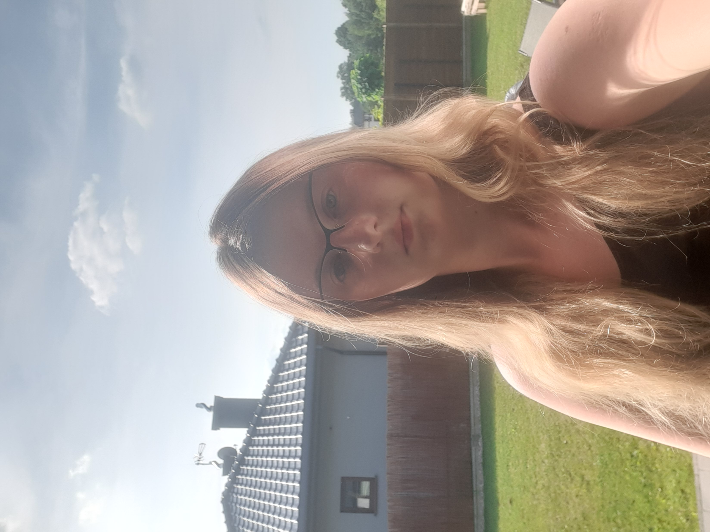

Wiktoria Gocolińska
Grafik komputerowy
Warszawa
w.gocolinska@gmail.com
48 678345678
Umiejętności
Adobe Photoshop
90%
Języki obce
80%
Zdolności manualne
75%
Media
50%
Języki obce
Angielski B2
Hiszpański A2
O mnie
Grafik komputerowy z pasją do odręcznego szkicowania i umiejętnością przekształcania rysunków na format cyfrowy. Doskonale łączę tradycyjne techniki artystyczne z nowoczesnymi narzędziami graficznymi, tworząc unikalne i kreatywne projekty. W wolnym czasie jestem zapalonym graczem, co pozwala mi czerpać inspirację z bogatego świata gier wideo i najnowszych trendów w grafice komputerowej.
Edukacja
2023
Multimedia i grafika komputerowa - Uniwersytet WSB Merito
2019-2023
Technik żywienia i usług gastronomicznych
Szkolenia
01.07.2021
Kurs baristy (w wymiarze 8 godzin) – zrealizowane przez REVO Spółka z ograniczoną odpowiedzialnością – w ramach projektu „Zintegrowany rozwój szkolnictwa zawodowego”
8.06.2022 - 22.06.2022
Certyfikat dotyczący praktyki zawodowej – zrealizowane przez hotel Narvil Conference & Spa
Hobby
- Czytanie książek
- Szkicowanie
- Jazda na rowerze
- Jazda konna
- Pole dance
- Granie w gry
Portfolio
ko
Photo 1
Photo 2
Photo 3


Photo 4
Photo 5
Photo 6


2019-2023
Technik żywienia i usług gastronomicznych
Szkolenia
01.07.2021
Kurs baristy (w wymiarze 8 godzin) – zrealizowane przez REVO Spółka z ograniczoną odpowiedzialnością – w ramach projektu „Zintegrowany rozwój szkolnictwa zawodowego”
8.06.2022 - 22.06.2022
Certyfikat dotyczący praktyki zawodowej – zrealizowane przez hotel Narvil Conference & Spa
Kurs baristy (w wymiarze 8 godzin) – zrealizowane przez REVO Spółka z ograniczoną odpowiedzialnością – w ramach projektu „Zintegrowany rozwój szkolnictwa zawodowego”
8.06.2022 - 22.06.2022
Certyfikat dotyczący praktyki zawodowej – zrealizowane przez hotel Narvil Conference & Spa
Certyfikat dotyczący praktyki zawodowej – zrealizowane przez hotel Narvil Conference & Spa
Hobby
- Czytanie książek
- Szkicowanie
- Jazda na rowerze
- Jazda konna
- Pole dance
- Granie w gry
Portfolio
ko| Photo 1 | Photo 2 | Photo 3 |
|
|
|
| Photo 4 | Photo 5 | Photo 6 |
|
|
|